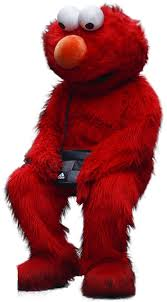

Wekelijkse check-in · v1.0
Wie mag eerst?
Laat Elmo beslissen.
Een eerlijke, willekeurige, en vooral onnodig ingewikkelde manier om de volgorde van sprekers te bepalen. Met ondersteuning van een rode, pluizige coach.
Hoi! Elmo is er weer. Elmo gaat vandaag beslissen wie mag praten.
Dat is vast heel spannend.

1
2
3
Wie is er vandaag?
Tik op iedereen die meedoet aan de check-in.
0 geselecteerd
Wauw, selecteren. Heel geavanceerd. Elmo is onder de indruk.
1
2
3
De vraag van deze week
Iedereen geeft een getal. Antwoord eerlijk. Of niet. Elmo ziet het toch niet.
VRAAG VAN DE WEEK
Laden...
Getallen. Leuk. Elmo kan tellen tot tien. Soms.
1
2
3
De volgorde van vandaag
Tromgeroffel... gesorteerd op laagste naar hoogste waarde.
Klaar. Elmo gaat nu even liggen.